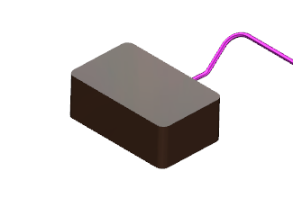
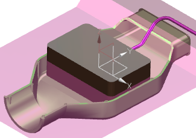
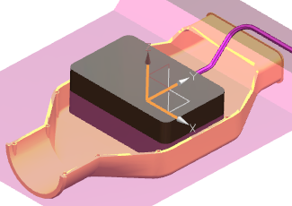
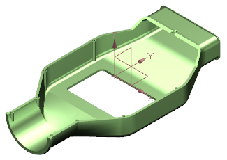

隐藏组件 sys_eng_top。

显示组件 sys_eng_bottom。

右击组件 sys_eng_bottom 并选择 WAVE→将几何体复制到新部件。
阅读创建一个与位置无关的链接特征信息框中的信息，然后点击确定。
在新建部件对话框的名称输入框中键入 bottom_start 并回车。
选择实体的下半部分以及坐标系。

点击确定。
选择窗口→更多。
在更改窗口对话框中，双击 bottom_start.prt。
在部件导航器中，您可以看到已创建了两个 WAVE 链接。

开始建模应用模块。